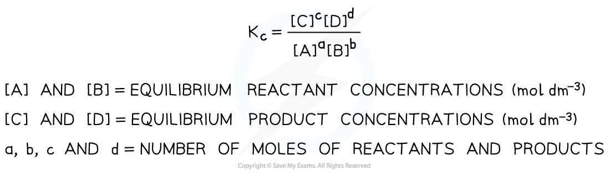
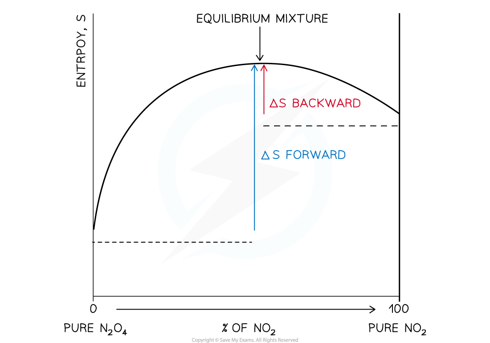

4.4 Chemical Equilibria · Topic 13
Kc, Kp, changing conditions, entropy and equilibrium position
4.4 Chemical Equilibria · Topic 13
本页严格按 Pearson Edexcel International Advanced Level Chemistry specification 的 Topic 13: Chemical Equilibria 编排，内容来自项目内的 `4.4 Chemical Equilibria.pdf.pdf`。解释采用中文，专业词汇保留 English，便于和 specification、Data Booklet 及 exam wording 对照。
Learning objectives
学完本章后，你应该能够：
- deduce \(K_c\) expressions for homogeneous and heterogeneous equilibria；
- calculate equilibrium concentrations from moles and volume，并求 \(K_c\) 及其 units；
- deduce \(K_p\) expressions using equilibrium partial pressures；
- use mole fraction 和 total pressure 计算 partial pressure，再求 \(K_p\)；
- explain how temperature、pressure、concentration 和 catalyst affect equilibrium composition；
- explain why only temperature changes the value of \(K_c\) or \(K_p\)；
- use temperature changes to explain changes in \(K\) and equilibrium position；
- calculate \(\Delta S_{\mathrm{total}}\) at different temperatures；
- use \(\Delta S_{\mathrm{total}}=R\ln K\) 连接 entropy 与 equilibrium constant；
- use the size of \(K\) 判断 equilibrium position 和 reaction extent。
13.1 Equilibrium constant, \(K_c\)
Dynamic equilibrium
在 a closed system 中，reversible reaction 达到 equilibrium 时：
- forward reaction 和 reverse reaction 仍然同时进行；
- forward rate = reverse rate；
- concentrations 保持 constant，但不一定相等；
- macroscopic properties 不再发生 net change。
Equilibrium position 指 mixture 中 reactants 和 products 的相对 amounts。它由 thermodynamics 决定，而不是由 reaction rate 决定。
Deducing a \(K_c\) expression
对于 general equilibrium：
\[ \ce{aA + bB <=> cC + dD} \]
equilibrium constant expression 为：
\[ K_c=\frac{[\ce{C}]^c[\ce{D}]^d} {[\ce{A}]^a[\ce{B}]^b} \]
方括号表示 equilibrium concentration，单位通常为 \(\mathrm{mol\,dm^{-3}}\)。Balanced equation 中的 stoichiometric coefficients 变成 concentration 的 powers。
Pure solids 和 pure liquids 通常不写入 equilibrium expression，因为它们的 effective concentration 近似 constant。

Worked example · writing \(K_c\) expressions
写出以下 equilibria 的 \(K_c\) expression：
- \(\ce{Ag+(aq) + Fe^{2+}(aq) <=> Ag(s) + Fe^{3+}(aq)}\)
- \(\ce{N2(g) + 3H2(g) <=> 2NH3(g)}\)
- \(\ce{2SO2(g) + O2(g) <=> 2SO3(g)}\)
\[ K_c=\frac{[\ce{Fe^{3+}}]} {[\ce{Ag+}][\ce{Fe^{2+}}]} \]
\(\ce{Ag(s)}\) 是 pure solid，因此 omit。
\[ K_c=\frac{[\ce{NH3}]^2} {[\ce{N2}][\ce{H2}]^3} \]
\[ K_c=\frac{[\ce{SO3}]^2} {[\ce{SO2}]^2[\ce{O2}]} \]
Concentration from amount
如果题目给出 moles 和 total volume：
\[ [\text{species}] =\frac{\text{number of moles}}{\text{volume in }\mathrm{dm^3}} \]
先把 \(\mathrm{cm^3}\) 换成 \(\mathrm{dm^3}\)，再代入 \(K_c\) expression。\(K_c\) 的 units 取决于 expression 的 powers；有些 calculation 中 units 会完全 cancel。
Worked example · calculating \(K_c\) from equilibrium data
对于 esterification：
\[ \ce{CH3COOH(l) + C2H5OH(l) <=> CH3COOC2H5(l) + H2O(l)} \]
在 \(0.500\ \mathrm{dm^3}\) reaction mixture 中，equilibrium moles 为：
\[ n(\ce{CH3COOH})=0.235,\quad n(\ce{C2H5OH})=0.035 \]
\[ n(\ce{CH3COOC2H5})=0.182,\quad n(\ce{H2O})=0.182 \]
Equilibrium concentrations：
\[ [\ce{CH3COOH}]=\frac{0.235}{0.500}=0.470 \]
\[ [\ce{C2H5OH}]=\frac{0.035}{0.500}=0.070 \]
\[ [\ce{CH3COOC2H5}] =[\ce{H2O}] =\frac{0.182}{0.500}=0.364 \]
代入：
\[ K_c=\frac{[0.364][0.364]}{[0.470][0.070]} =4.03 \]
四个 concentration terms 的 units cancel，因此 \(K_c=4.03\) 无 units。
ICE table
如果只给 initial data 和一个 equilibrium concentration，可以使用 ICE table：
| Reactants | Products | |
|---|---|---|
| Initial | initial amount / concentration | initial amount / concentration |
| Change | 根据 stoichiometric ratio 减少 | 根据 stoichiometric ratio 增加 |
| Equilibrium | initial + change | initial + change |
先确定 limiting change，再按 balanced equation 的 coefficients 推出其他 species 的 change。最后把 equilibrium values 换成 concentration，代入 \(K_c\)。
Worked example · ICE table
Ethyl ethanoate hydrolysis：
\[ \ce{CH3COOC2H5(l) + H2O(l) <=> CH3COOH(l) + C2H5OH(l)} \]
开始时有 \(0.1000\) mol ester 和 \(0.1000\) mol water，volume 为 \(1.00\ \mathrm{dm^3}\)。Equilibrium 时 water 为 \(0.0654\) mol。
Water 消耗：
\[ 0.1000-0.0654=0.0346\ \mathrm{mol} \]
由 \(1:1:1:1\) stoichiometric ratio：
\[ n(\ce{CH3COOC2H5})=n(\ce{H2O})=0.0654 \]
\[ n(\ce{CH3COOH})=n(\ce{C2H5OH})=0.0346 \]
因为 volume 为 \(1.00\ \mathrm{dm^3}\)，这些数值也就是 concentrations：
\[ K_c=\frac{[0.0346][0.0346]}{[0.0654][0.0654]} =0.280 \]
13.2 Equilibrium constant, \(K_p\)
Partial-pressure expression
对于 all-gas equilibrium：
\[ \ce{aA(g) + bB(g) <=> cC(g) + dD(g)} \]
\[ K_p=\frac{(p_{\ce{C}})^c(p_{\ce{D}})^d} {(p_{\ce{A}})^a(p_{\ce{B}})^b} \]
\(p_i\) 是 equilibrium partial pressure。Pure solids 和 pure liquids 同样 omit；只有 gaseous species 出现在 \(K_p\) expression 中。
本章笔记中使用 Pa 或 kPa 表示 pressure，实际 exam 应按题目给出的 pressure unit 保持一致。\(K_p\) 的 units 取决于 total powers。
Worked example · writing \(K_p\) expressions
- \(\ce{N2(g) + 3H2(g) <=> 2NH3(g)}\)
\[ K_p=\frac{(p_{\ce{NH3}})^2} {p_{\ce{N2}}(p_{\ce{H2}})^3} \]
- \(\ce{CaCO3(s) <=> CaO(s) + CO2(g)}\)
\[ K_p=p_{\ce{CO2}} \]
两种 solids 都被 omit。
Mole fraction and partial pressure
如果题目给出 moles 和 total pressure，先求 mole fraction：
\[ x_i=\frac{n_i}{n_{\mathrm{total}}} \]
再求 partial pressure：
\[ p_i=x_i p_{\mathrm{total}} \]
最后把 equilibrium partial pressures 代入 \(K_p\) expression。
Worked example · calculating \(K_p\)
对于：
\[ \ce{H2(g) + I2(g) <=> 2HI(g)} \]
在 equilibrium 时：
\[ n(\ce{H2})=1.71\times10^{-3},\quad n(\ce{I2})=2.91\times10^{-3} \]
\[ n(\ce{HI})=1.65\times10^{-2} \]
total pressure 为 \(100\ \mathrm{kPa}\)。
\[ n_{\mathrm{total}}=2.112\times10^{-2}\ \mathrm{mol} \]
Mole fractions：
\[ x_{\ce{H2}}=0.0810,\quad x_{\ce{I2}}=0.1378,\quad x_{\ce{HI}}=0.7813 \]
Partial pressures：
\[ p_{\ce{H2}}=8.10,\quad p_{\ce{I2}}=13.78,\quad p_{\ce{HI}}=78.13\ \mathrm{kPa} \]
因此：
\[ K_p=\frac{(78.13)^2}{(8.10)(13.78)} =54.7 \]
pressure powers 相同，所以 units cancel。
13.4-13.5 Changing conditions
Le Chatelier link
当 equilibrium system 受到 change of conditions 的 disturbance，equilibrium position 会移动，产生 opposing change。这个 principle 可以帮助解释 composition 的改变，但要区分：
- equilibrium position 改变；
- numerical value of \(K\) 改变。
只有 temperature change 会改变 \(K_c\) 或 \(K_p\) 的 value。 Concentration、pressure 和 catalyst 会改变 equilibrium position 或达到 equilibrium 的速度，但不会改变 \(K\)。
Changing concentration
增加某 species 的 concentration 后，system 会 shift away from that species，直到恢复 equilibrium ratio。移除某 species 时，system 会 shift towards that species。
但新的 equilibrium position 只是在恢复原来的 \(K\) value；\(K\) 本身不变。
Changing pressure
Pressure changes 只对 gas molecules 参与的 equilibrium 有影响：
| Change | Equilibrium shift |
|---|---|
| Increase pressure | shift towards side with fewer moles of gas |
| Decrease pressure | shift towards side with more moles of gas |
| Equal gaseous moles on both sides | no position shift |
对于 \(\ce{N2(g) + 3H2(g) <=> 2NH3(g)}\)，increase pressure 会 shift right，因为右侧只有 2 moles gas，左侧有 4 moles gas。
Pressure 改变不会改变 \(K_p\) value；system 通过 shift 到新的 composition 恢复相同的 \(K_p\)。
Adding a catalyst
Catalyst 同时加快 forward 和 reverse reactions，且加快程度相同。因此：
- equilibrium position 不变；
- \(K_c\) / \(K_p\) value 不变；
- 只会更快达到 equilibrium。
Worked example · which condition changes \(K\)?
对于：
\[ \ce{AB(aq) + CD(aq) <=> AC(aq) + BD(aq)} \]
如果 reaction 的 \(\Delta H=+180\ \mathrm{kJ\,mol^{-1}}\)，哪些 changes 会改变 \(K_c\)？
只有 temperature change 会改变 \(K_c\)。由于 forward direction 是 endothermic，increase temperature 会使 equilibrium shift right，并使 \(K_c\) increase。
Changing concentration、pressure 或 adding a catalyst 都不会改变 \(K_c\)。
13.6-13.7 Temperature and \(K\)
Temperature changes the equilibrium constant
把 heat 看作 equation 中的 reactant 或 product：
- forward reaction endothermic：heat 在左侧，increase temperature shift right，\(K\) increase；
- forward reaction exothermic：heat 在右侧，increase temperature shift left，\(K\) decrease。
对于 endothermic reaction，temperature 增加会增加 products / reactants ratio，因此 \(K_c\) 和 \(K_p\) 增加。对于 exothermic reaction，temperature 增加会使该 ratio 减小，因此 \(K\) 减小。
Summary
| Forward reaction | Increase temperature | Value of \(K\) |
|---|---|---|
| endothermic | shift in forward direction | increase |
| exothermic | shift in reverse direction | decrease |
Decrease temperature 的 effect 相反。
13.8 Entropy and equilibrium constant
\(\Delta S_{\mathrm{total}}\) at different temperatures
对于 reaction：
\[ \Delta S_{\mathrm{total}} =\Delta S_{\mathrm{system}} +\Delta S_{\mathrm{surroundings}} \]
并且：
\[ \Delta S_{\mathrm{surroundings}}=-\frac{\Delta H}{T} \]
当 temperature 改变时，\(\Delta S_{\mathrm{system}}\) 通常变化不大，除非 reactants / products 发生 change of state；但 \(\Delta S_{\mathrm{surroundings}}\) 会明显变化，因为它与 \(1/T\) 有关。
Worked example · feasibility at different temperatures
判断以下 reaction 在 \(293\ \mathrm{K}\) 与 \(1173\ \mathrm{K}\) 是否 spontaneous：
\[ \ce{CaCO3(s) -> CaO(s) + CO2(g)} \]
已知：
\[ \Delta H=+177.9\ \mathrm{kJ\,mol^{-1}},\quad \Delta S_{\mathrm{system}}=+160.4\ \mathrm{J\,K^{-1}\,mol^{-1}} \]
在 \(293\ \mathrm{K}\)：
\[ \Delta S_{\mathrm{surroundings}} = -\frac{177900}{293} =-607.2\ \mathrm{J\,K^{-1}\,mol^{-1}} \]
\[ \Delta S_{\mathrm{total}} =160.4-607.2 =-446.8\ \mathrm{J\,K^{-1}\,mol^{-1}} \]
Not spontaneous。
在 \(1173\ \mathrm{K}\)：
\[ \Delta S_{\mathrm{surroundings}} =-\frac{177900}{1173} =-151.7\ \mathrm{J\,K^{-1}\,mol^{-1}} \]
\[ \Delta S_{\mathrm{total}} =160.4-151.7 =+8.7\ \mathrm{J\,K^{-1}\,mol^{-1}} \]
Spontaneous at \(1173\ \mathrm{K}\)。
Relationship between entropy and \(K\)
Specification 给出的 relationship 为：
\[ \Delta S_{\mathrm{total}}=R\ln K \]
因此：
\[ \ln K=\frac{\Delta S_{\mathrm{total}}}{R} \]
\[ K=e^{\Delta S_{\mathrm{total}}/R} \]
其中 \(R\) 是 gas constant。\(\Delta S_{\mathrm{total}}\) 越 positive，\(K\) 越 large，equilibrium position 越偏向 products。

13.9 Equilibrium position and extent
Interpreting the size of \(K\)
\(K\) 的大小可以帮助判断 reaction extent：
| Value of \(K\) | Equilibrium position | Interpretation |
|---|---|---|
| very large | far to the right | products predominate |
| very small | far to the left | reactants predominate |
| around 1 | between both sides | appreciable amounts of both remain |
这不是 absolute rule；要结合 stoichiometry、units、initial composition 和题目给出的 data。\(K\) 只适用于指定 temperature。
Equilibrium and entropy
Reversible reaction 可以从 either side approach equilibrium。到 equilibrium 时，forward 和 backward net entropy changes balance；在 note 的 convention 中：
\[ \Delta S_{\mathrm{total,forward}} =\Delta S_{\mathrm{total,backward}} \]
并且 equilibrium mixture 不能继续向 reactants 或 products 完全推进，因为从 equilibrium mixture 到任一端点的 entropy change 会变成 negative。
Exam checklist
Source note
本页章节素材来自项目内的 `Note per Chapter/Note per Chapter/4.4 Chemical Equilibria.pdf.pdf`；考纲校对来自 `International-A-Level-Chemistry-Spec.pdf` 的 Topic 13: Chemical Equilibria。图像已从 PDF 内嵌对象独立提取并存放在 `assets/notes/equilibria/`。